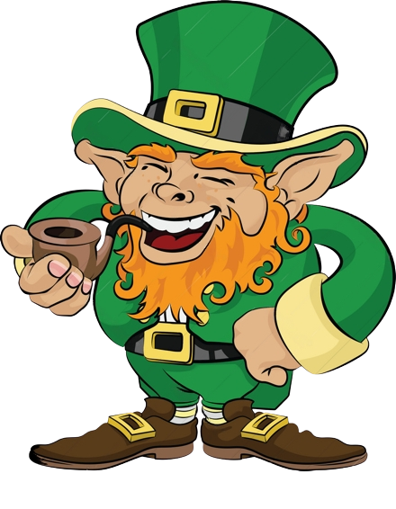

Happy Saint Patricks Day
Facts about St. Patricks Day:
- Saint Patrick is actually British.
- Saint Patricks Day is on March 17th.

- Saint Patricks Day is actually not on the 17th, the 17th is the day he died.
- He changed his name from Maewyn Succat to Patrick when he became a bishop.
- The first St. Patrcks Day parade was not in Ireland but in New York.
- The original colors of Saint Patricks Day was blue because green was considered unlucky.
- There are no female leprechauns because they never existed.
- The legend that St. Patrick banished snakes from Ireland is fake.
- There are no signs of snkes in the country's fossil record.
- The Shamrock plant(☘️) is considered a sacred plant that symbolized the arrival of Spring.